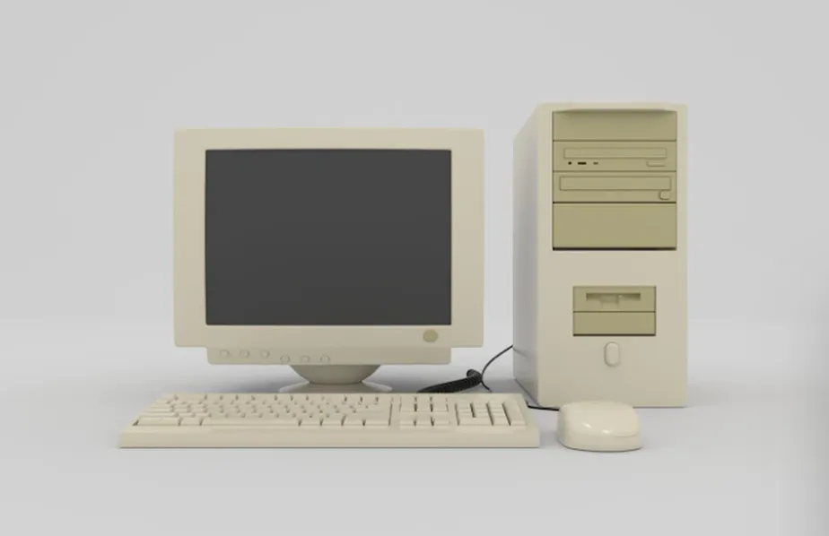

O Início da Computação
As Primeiras Máquinas
A máquina analítica, também conhecido como engenho analítico foi proposto pelo professor de matemática e pioneiro da ciência da computação Charles Babbage. A maquina foi descrita pela primeira vez em 1837, como a sucessora da Maquina Diferencial

A Revolução dos Computadores
De Tubos a Transistores
Os primeiros computadores surgiram na década de 1940 e possuíam somente dois níveis de linguagem: o de máquina, no qual toda a programação era feita, e o da lógica digital, onde os programas eram efetivamente executados.

A Era da Internet
A Conexão Global
A história da internet teve início com a Arpanet, uma rede de troca de informações que havia sido desenvolvida para conectar instalações de pesquisas e militares com o Pentágono, nos Estados Unidos, na década de 1960.